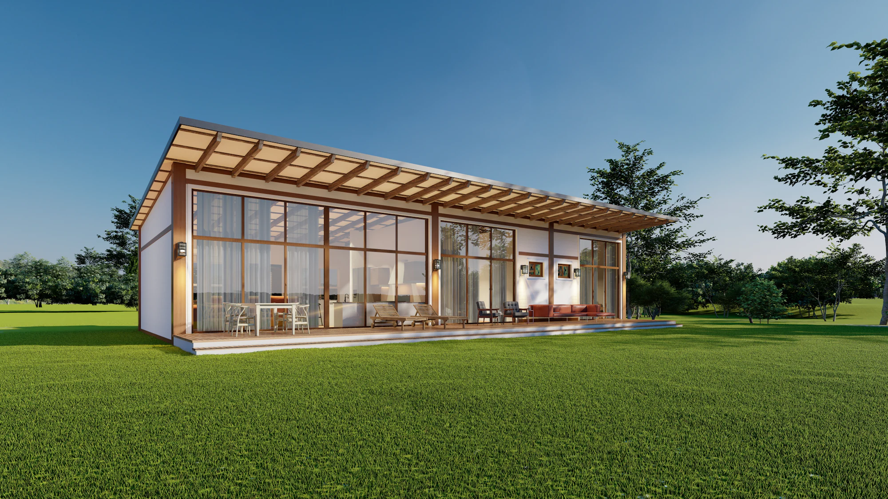
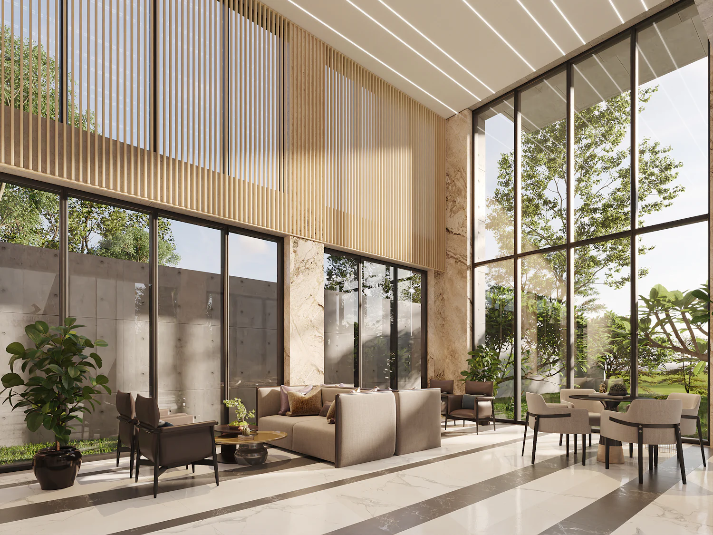
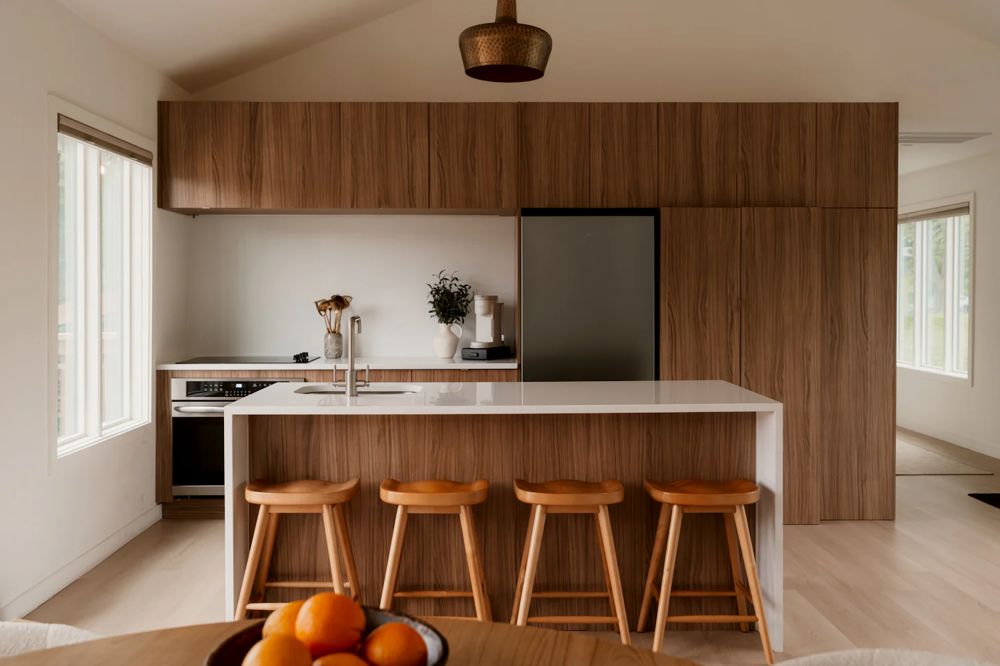
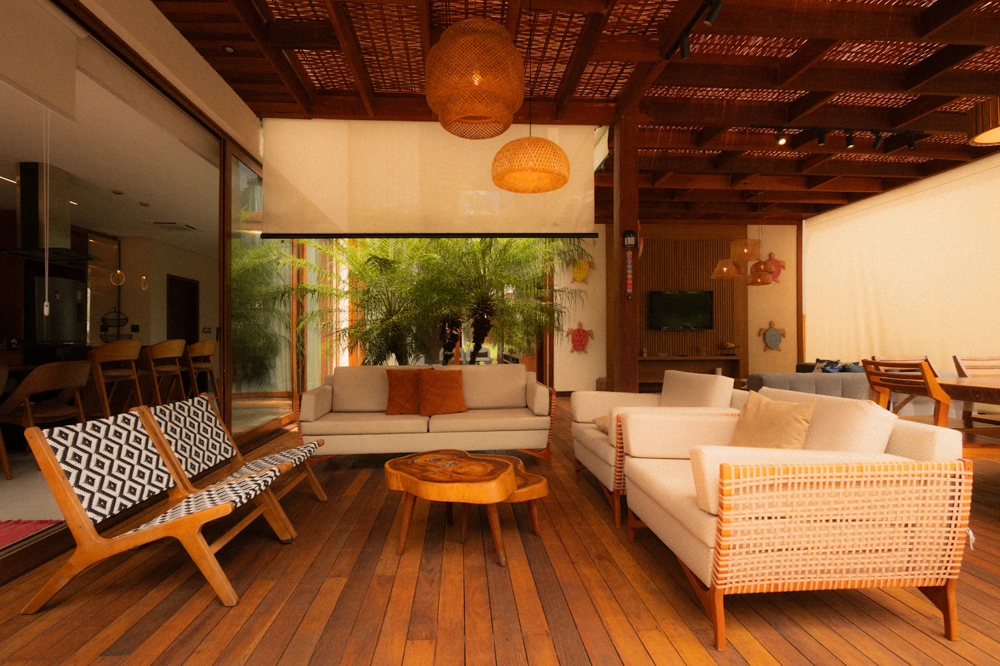
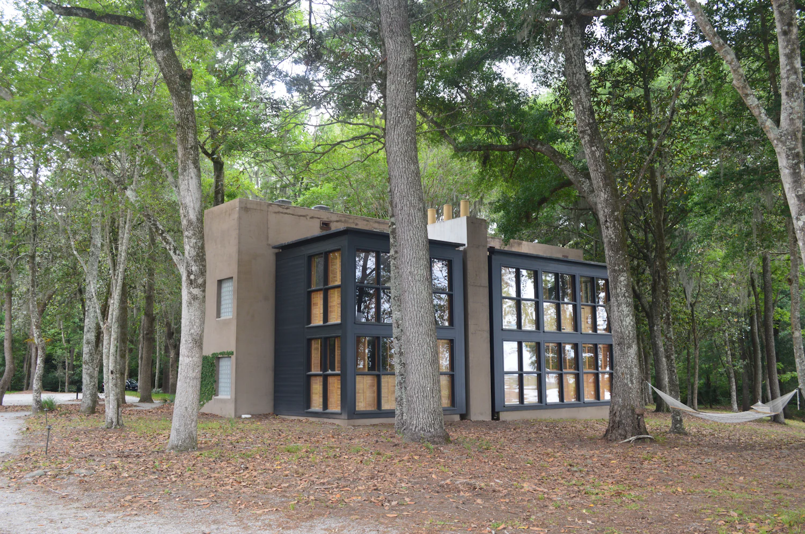
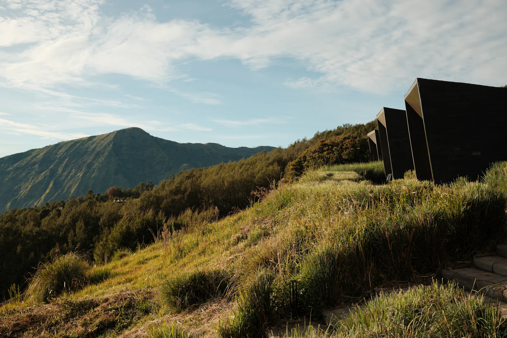
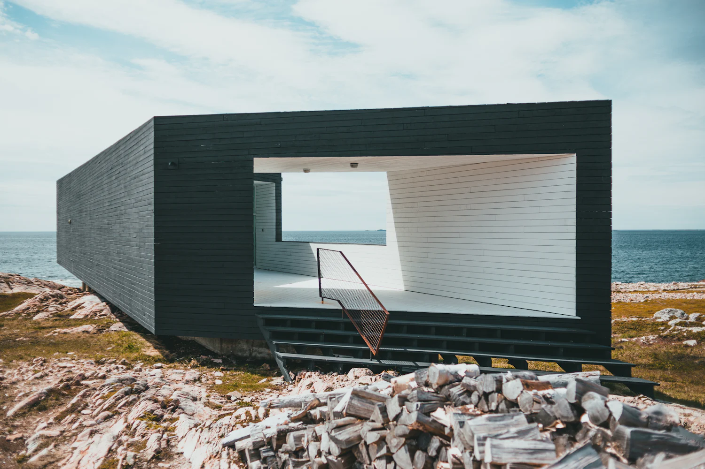

Proyecto conceptual de vivienda prefabricada
Tu próxima etapa tiene casa.
Explora viviendas prefabricadas con espacios abiertos, materiales cálidos y distribuciones para distintas formas de vivir.

Encuentra espacio para tu manera de vivir.
Seis modelos conceptuales, de 36 a 176 m². Filtra por dormitorios o superficie y abre la ficha del que más se parezca a lo que buscas.
Ningún modelo coincide con esos filtros.
Prueba con otra combinación de dormitorios y superficie, o vuelve a ver los seis modelos.
Imagina lo que pasa dentro.
Tres ambientes de referencia para pensar en la luz, los materiales y los recorridos de una casa antes de hablar de planos.

Sala con luz natural
Ventanales altos y doble altura: la luz entra desde la mañana y el jardín forma parte del estar.
Fotografía de referencia
Cocina abierta
Una isla para cocinar acompañado, frentes de madera y espacio libre alrededor para moverse sin estorbar.
Fotografía de referencia
Terraza
Un ambiente cubierto y abierto a la vez, con suelo de madera y sombra para estar afuera a cualquier hora.
Visualización de referenciaTres lugares, tres maneras de habitar.
Proyectos conceptuales de la demo: ideas de implantación en bosque, valle y costa. No son obras realizadas.

Refugio del Bosque
Una casa que se acomoda entre los árboles y se abre con ventanales hacia el claro.
Fotografía de referencia
Casa del Valle
Volúmenes escalonados que siguen la pendiente y miran a las montañas.
Fotografía de referencia
Residencia Costa Clara
Un gran marco orientado al mar, con el interior protegido del viento.
Visualización conceptualDe la primera conversación al plan, en cuatro pasos.
-
Cuéntanos cómo quieres vivir.
Quiénes van a habitar la casa, cómo son sus días y qué lugar tienen en mente.
-
Explora modelos y distribuciones.
Comparamos superficies y recorridos hasta encontrar un punto de partida.
-
Define los detalles de tu proyecto.
Materiales, aberturas y ajustes de distribución según el terreno y el uso.
-
Planifica los siguientes pasos.
Con la evaluación del proyecto se ordena qué viene después y qué hace falta para avanzar.
Preguntas frecuentes
La viabilidad de cada vivienda depende de su ubicación y de la evaluación del proyecto. Por eso aquí no encontrarás precios ni plazos cerrados.
¿Necesito tener un terreno antes de empezar?
Para una primera conversación, no. Para avanzar, sí: los accesos, la pendiente y la normativa del lugar condicionan qué vivienda es viable, y eso se confirma al evaluar el proyecto.
¿Puedo personalizar un modelo?
Los modelos son puntos de partida. La distribución, los acabados y las aberturas pueden ajustarse; el alcance de cada cambio se define según la ubicación y la evaluación del proyecto.
¿Cómo llega la vivienda al terreno?
El transporte se planifica según la distancia, el estado de los accesos y el tamaño de los módulos. Su viabilidad se estudia caso por caso, con la ubicación ya definida.
¿Qué alcance tiene una cotización?
Una cotización detalla qué está contemplado y qué no: vivienda, transporte, montaje y trabajos en el terreno. No adelantamos precios ni plazos sin datos, porque dependen de la ubicación y de la evaluación de cada proyecto.
Tu próxima casa empieza con una idea.
Cuéntanos qué buscas y qué modelo te llamó la atención. Con eso alcanza para empezar a conversar.
Este formulario es una simulación: forma parte de una demo y no envía ni guarda ningún dato.
Simulación de la demo
El formulario está completo, pero no se envió nada.
ALBA Hábitat es un proyecto conceptual. Tus datos no salieron de esta página ni se guardaron. En un sitio real, en este punto recibirías la confirmación de tu solicitud.